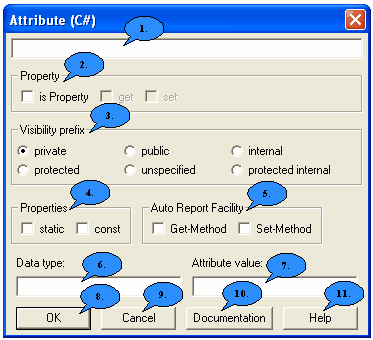

|
1. Enter the name of the attribute here. 2. If you want the attribute to be a property, you can specify this here and define get and set methods. 3. Here you can define the visibility of the attribut. You have the choice between: private: The attribut is visible and well-known only
within the class. 4. Here you can define the properties of the atrribute. You have the choice between: static: The attribute is not individually set for each object
but exists only once for the whole class. All objects of this class
can access the attribute, that means if it was changed by any object,
it will be changed for all objects. The attribute can also be accessed
if there is no class defined yet. 5. If you set a hook here, Jumli will automatically generate Get and Set methods which allow you to access this attribute.
7. If you want to initialize your attribute at the beginning, you can assign a initial value here. 8. Exit the dialog and save changes. 9. Exit the dialog without saving changes by pressing the "Cancel" button. 10. This button leads you to thedocu-dialog. 11. Pressing this button you will get to the dialog help, where you are right now.
|
Back to the dialog overview |
 6.
Here you have to define the data type of the attribute.
A possible data type could be "int" or "string".
6.
Here you have to define the data type of the attribute.
A possible data type could be "int" or "string".